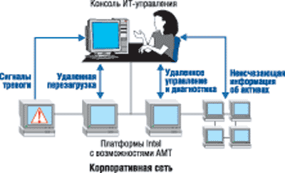

Александр Семенов
Велика ли разница между сотовым телефоном, ПК, ноутбуком, мобильной платформой и блейд-сервером? Для ИТ-менеджеров организаций на сегодняшний день — нет. ИТ-отделы все так же должны устанавливать, интегрировать, проводить инвентаризацию, диагностику, выполнять ремонтные работы и операции восстановления для самых разных платформ, как если бы они являлись одной взаимосвязанной системой. А сегодня они еще и должны выполнять эти работы со все более и более ограниченными ресурсами. В результате, пока ИТ-менеджеры тонут в море все чаще возникающих проблем управления, безопасности и связи, совокупная стоимость владения (TCO) вычислительными системами для бизнеса продолжает быстро расти.
Как и для других корпораций и организаций, ИТ-инфраструктура для корпорации Intel — одна из основных забот. В поисках решения своих проблем корпорация провела всесторонние исследования как у себя, так и в других организациях, стремясь определить основные тенденции развития вычислительных систем для бизнеса и трудности, с которыми сталкиваются ИТ-отделы. Результаты этих исследований показали, что все компании страдают от сходных проблем. Однако ключевая задача — создание интегрированной ИТ-инфраструктуры, т. е. безопасных, надежных, защищенных от несанкционированного вмешательства конфигураций управления, подходящих для всех платформ — от сотовых телефонов до серверов. Необходимость решения данной проблемы и стала движущей силой концепции цифрового офиса корпорации Intel.
В рамках данной инициативы Intel на сегодняшний день представила технологию, не требующую большого количества персонала, снабжения, установки и/или технической поддержки, и набор технологий управления, функционально осуществимых на любых платформах (настольные компьютеры, ноутбуки, КПК и т. д.) и имеющих основной комплект общих для отрасли функций.
Но полностью функциональная, межплатформная технология не может быть создана одной отдельно взятой компанией. Естественно, что для этого требуется сотрудничество целого ряда ИТ-компаний и организаций, занимающихся разработкой и изготовлением различного аппаратного и программного обеспечения, от ОС до приложений сторонних производителей. И корпорация Intel активно стремится к сотрудничеству с другими ИТ-компаниями в создании реальных, эффективных межплатформных решений для современных критических проблем.
Актуальная проблема: устаревшая концепция
ИТ-организации полностью зависят от работы компьютеров. Как же они попали в такое неудобное положение, в котором их возможности управлять своими собственными средствами столь ограниченны? Практически в любой другой отрасли промышленности (в транспортной, энергетической, в промышленном производстве) имеются хорошо развитые технологии для дистанционного мониторинга и устранения проблем. Фактически эти технологии появились благодаря ИТ-отрасли. Но, как ни странно, в самой ИТ-индустрии нет ни средств, ни возможностей контроля, которых можно было бы ожидать от сложного оборудования.
Приходится признать, что ИТ-индустрия не создала современных способов мониторинга и устранения своих собственных проблем. Вместо этого при возникновении какой-либо проблемы технический персонал чаще всего просто «убивает» ПО, а затем переустанавливает его. Бывает и так, что пока система не откажет (и пользователям не придется остановить работу), проблему не удается распознать в принципе.
Эти упущения привели к возникновению ряда постоянных проблем ИТ-отрасли, которые при бурном развитии и возросшей важности вопросов безопасности быстро становятся непреодолимыми.
| «ИТ-отрасль находится в странной ситуации, — признал Даг Буш, вице-президент и директор по информационным технологиям корпорации Intel. — У нас работает чрезвычайно сложная техника: процессоры, коммуникационное оборудование и так далее, но мы используем ее, опираясь на устаревшую концепцию». |
Реальные числа, реальные деньги
Как быстро развиваются ИТ-отделы? Билл Сэйлс, генеральный менеджер отделения Intel Manageability Architecture and Products, говорит так: «За последние несколько лет в корпорации Intel потребность в ИТ-услугах для подразделений росла ежегодно на 11—12%. В некоторых компаниях характер развития ИТ-отделов напоминает закон Мура: они увеличиваются в два раза каждые 12—18 месяцев».
Учитывая столь высокую внутреннюю потребность в ресурсах, ИТ-менеджеры Intel внимательно изучили составляющие совокупной стоимости владения ИТ-инфраструктурой предприятия. Как оказалось, увеличение внутреннего спроса отчасти объясняется развитием компании, но есть и два других фактора, важность которых продолжает возрастать. Во-первых, сотрудники все активнее задействуют в своей работе информационные системы; во-вторых, для выполнения поставленных задач они используют чрезвычайно богатый набор средств.
«Очевидно, мы получаем те же проблемы, что и любая другая ИТ-организация, стараясь удовлетворить возрастающую потребность, но располагая при этом ограниченными ресурсами и средствами», — утверждает Билл Сэйлс. Совершенно ясно также, что ИТ-отделы не покупают платформы просто для того, чтобы получить самые быстрые и дешевые системы. Настоящие тенденции отражают возрастающие потребности в безопасности системы, простоте ее интеграции, совместимости со старыми системами и т. д.
Одна из причин этих изменений в том, что совокупная стоимость владения для вычислительных средств заметно превысила цену аппаратного обеспечения. Для корпораций сегодняшнего дня TCO включает существенные расходы на техническую поддержку за четырехлетний жизненный цикл. Данные, собранные корпорацией Intel (как у себя, так и в других компаниях) относительно этой тенденции, демонстрируют истинное положение дел. Расходы, связанные с износом аппаратного обеспечения, сейчас составляют 25% от всех ИТ-расходов; расходы на ПО — всего от 10 до 15%. Невелика и доля расходов на дополнительные средства, такие, как электричество и коммунальные услуги, плата за используемую площадь, телефон и т. д. Львиную же долю TCO вычислительных средств составляют затраты на персонал, а не на платформы. В среднем по отрасли 50% ИТ-бюджета тратится на установку оборудования и ПО, проведение технического обслуживания и инвентаризации, улучшение, диагностику, ремонт и восстановление различных платформ, т. е. работы, выполняемые постоянным и нанятым по контракту персоналом.
Исследуя проблемы ИТ-инфраструктуры
Чтобы найти пути снижения TCO для ИТ-инфраструктуры предприятия, корпорация Intel решила отработать их на примере своего собственного ИТ-отдела. На первом этапе были определены проблемы отдела: функции управления, безопасности, коммуникационные возможности, затраты на рабочий персонал и т. д. Затем корпорация Intel определила размер TCO для своей ИТ-инфраструктуры.
На втором этапе была проведена работа с другими OEM-производителями и ИТ-отделами по всему миру, чтобы выяснить, сталкиваются ли эти ИТ-организации и пользователи с похожими проблемами. В эту работу входило исследование тенденций с точки зрения крупных компаний, таких, как Fargo, Bank of New York, Home Depot и многих других.
Том Суинфорд, генеральный менеджер отделения LAN Access корпорации Intel, говорит следующее: «Много раз компании, разрабатывающие современные технологии, выходили в отрасль с готовым решением и тогда начинали искать проблему. Но в этом случае мы спросили себя, какие проблемы наши клиенты хотят видеть решенными, и затем уже пришли к решению. Преимущества такого подхода очевидны: при непосредственном участии ИТ-менеджеров корпорация Intel смогла определить проблемы и тенденции, касающиеся компьютерной инфраструктуры предприятия, анализ которых позволит решать реальные задачи с помощью новой технологии».
Тревожные результаты
В ходе исследований, проведенных корпорацией Intel, обнаружилось несколько ключевых тенденций, включающих особенно тревожные моменты:
- значительный рост (от 85 до 100%) числа атак на ПО;
- значительный рост (уже более чем на 50%) расходов на оплату работы персонала и операций по управлению ИТ-инфраструктурой предприятия;
- заметное рассредоточение рабочей силы: члены команд находятся в различных зданиях, городах и даже странах;
- критическая потребность в возможностях коммуникаций между платформами, независимо от используемого типа устройства или ОС;
- перегруженность информацией, не только отдельных пользователей, но и групп и предприятий в целом.
| «Начиная от российской нефтеперерабатывающей компании и до колледжа в Нью-Джерси, от компании, работающей в авиакосмической промышленности, до средней компании, предоставляющей финансовые услуги, — все ИТ-организации имеют одни и те же проблемы. Частности, касающиеся сферы деятельности или групп клиентов, различаются, но основные проблемы, возникающие перед этими организациями, чрезвычайно схожи, независимо от профиля и размера компании», — подчеркивает Даг Буш. |
Пять наиболее серьезных проблем
В целом менеджеры ИТ-отделов выделяют в отрасли пять основных проблем.
1. Защита платформ изнутри. Вирусы, черви и другие опасные атаки, направленные на ПО, приводят к отказу систем изнутри. Отчасти это связано с тем, что программы безопасности не сохраняются при переустановке ОС, в то время как другие программы случайно или сознательно удаляются.
2. Управление средствами. Большинство ИТ-организаций не могут найти 20—25% своих средств и не имеют ни малейшего представления об их местонахождении: проданы ли они, или все еще используются, или были украдены. Для некоторых компаний доля их достигает трети от общего количества.
3. Удаленное управление, управление через Интернет и удаленная диагностика. ИТ-специалисты тратят массу времени, посещая рабочие места сотрудников с целью их улучшения, проведения диагностики или восстановления систем. До 40% этих посещений стали бы ненужными, если бы эти работы можно было выполнить, используя сеть, даже при выключенных, зависших или заблокированных ПК или ПК со сбоем в системе.
4. Сложности интеграции приложений. Все больше приложений оказываются несовместимыми: они не интегрируются, плохо работают друг с другом или не работают вообще.
5. Динамическое расположение ресурсов. ИТ-организациям необходимо получать больше отдачи от используемых систем, но при этом огромное количество процессоров и модулей памяти находится в нерабочем состоянии или функционирует частично.
На фоне непрерывного роста ИТ-инфраструктуры предприятия эти проблемы привели к критической потребности в решении проблем управления, безопасности и коммуникаций.
Современные решения не масштабируются
На сегодняшний день возможности, связанные с управлением и безопасностью, более не масштабируются. Например, потребность в удаленном управлении (улучшении, диагностике и восстановлении систем) возросла, но современные платформы и средства не поддерживают постоянные межплатформные функции, необходимые для выполнения таких удаленных задач. В результате вместо того, чтобы приобрести больше наилучших средств для персонала компании, организации нанимают все большее количество персонала для обслуживания ИТ-средств.
Грегори Брайант, директор подразделения Digital Office Planning and Marketing корпорации Intel, говорит: «В настоящее время многие предприятия достигли границ в управлении имеющимися у них ресурсами. Предприятия просто не могут продолжать решать настоящие проблемы при помощи рабочего персонала и денег и управлять своей ИТ-инфраструктурой на уровне современных требований. Мы должны внести положительные изменения в ИТ-инфраструктуру компании, чтобы удовлетворить некоторые существующие требования и предоставить новые возможности».
Важные выводы
Исследования корпорации Intel позволили определить направление развития технологий для ИТ-инфраструктуры предприятия. Первое и самое главное — признать, что платформы должны легче устанавливаться, настраиваться, подключаться к сети, обслуживаться и восстанавливаться. По существу, все типы систем должны быть проще в работе.
Первый вывод из этого положения: для увеличения полезности платформы должны быть более совместимыми. В платформы должны быть встроены устройства с развитыми логическими функциями, которые смогли бы самостоятельно определять состояние системы, ее конфигурацию, местонахождение пользователя и т. д.
Другое очевидное заключение состоит в том, что платформы должны иметь всеобъемлющие коммуникационные возможности. Пользователей не должно волновать, пользуются ли они локальной или глобальной сетью: связь должна быть интегрированной. Возможность установления связи должна быть доступна вне зависимости от используемой платформы (ПК, ноутбук, сотовый телефон, мобильная платформа или сервер).
Менее очевидна потребность в выполнении задач без запуска и завершения работы приложений. По словам Грегори Брайанта, совместная работа — это атрибут, а не приложение. Пользователи хотят иметь ряд всегда доступных им возможностей, независимо от того, какое приложение они используют. Например, пользователь Quickbooks хочет сделать телефонный звонок через Интернет бухгалтеру по какому-либо вопросу, в то же время отправить письмо по электронной почте и при этом не запускать и не завершать работу программных приложений для выполнения этих задач.
В конце концов, платформы должны уметь быстро реагировать, быть чувствительными. Пользователи не должны ожидать ответа от системы из-за ее занятости другой задачей. Например, если проводится дистанционное обновление системы или ее защита от атак на ПО, пользователь не должен ждать, пока эти приложения завершат работу, для того чтобы продолжить свою.
Первопричина проблем
Из проведенного Intel исследования ясно, что первопричина трех основных проблем, определенных ИТ-менеджерами, связана с возможностью удаленного управления. На самом деле возможности удаленного управления и обеспечения безопасности у современных ИТ-организаций весьма ограниченны. К сожалению, на сегодня удаленное управление возможно только при включенном ПК. В некоторых случаях специалисты ИТ-отдела могут выполнить удаленную загрузку, запустить систему, запросить инвентаризацию и вернуть ПК в спящий режим. Они могут выполнять эти действия, если ОС находится в рабочем состоянии, не заблокирована, не «зависла» и т. д. В перечисленных случаях доступ к ПК через сеть невозможен, и специалисту ИТ-отдела придется нанести визит пользователю, чтобы провести диагностику на месте и восстановить работоспособность системы.
Дело осложняется тем, что ИТ-специалисты и пользователи нередко находятся в разных местах. На предприятии, располагающем корпоративной сетью, пользователи имеют необходимую техническую поддержку и средства безопасности, включая установку ПО, защиту от вирусов, брандмауэры, средства управления и т. д. К сожалению, пользователи не могут взять с собой эту инфраструктуру, покидая корпоративную среду.
Встает очевидный вопрос: можно ли совместить безопасность, возможности управления и подключения? В таком случае пользователи при выходе за пределы организации могли бы брать с собой надежную, безопасную инфраструктуру с хорошей технической поддержкой. Пользователи получили бы системы, способные регулярно обслуживаться и обновляться, даже когда их владельцев нет на рабочем месте. Они могли бы безопасно работать на различных платформах в домашних условиях. Пользователи могли бы посещать собрания, иметь доступ к данным и выполнять свою работу удаленно, имея при этом эффективную ИТ-поддержку.
Энергонезависимые устройства хранения данных
Решая вопросы, возникшие в ходе проведенного исследования, инженеры корпорации Intel вплотную изучили списки проблем, проанализировав особенности работы людей, разработав сценарии и возможности проверки для улучшения ИТ-услуг. В частности, они изучали проблемы, которые можно решать удаленным способом, используя некую технологию активного управления. Как следствие, встали два практических вопроса: какие средства в состоянии сегодня помочь решить ИТ-проблемы и что могла бы сделать корпорация Intel для расширения возможностей, которыми обладают эти средства, или добавления новых?
На фоне других особенно выделяется один подход — использовать энергонезависимое устройство хранения данных для встроенной защиты против вирусов, спама, червей, воровства информации и других возможных атак, направленных на систему. Такой интегрированный подход к ИТ-инфраструктуре может разрешить одну из главных современных проблем: текущую неспособность выполнения простых настроек, управления и восстановления систем. По причине несанкционированных и/или злоумышленных проникновений в систему, а также по причине стандартных проблем, вызванных неумелым пользованием, программы на сегодняшний день очень уязвимы.
Использование энергонезависимых устройств хранения данных позволит инженерам перемещать ИТ-услуги и агенты управления в технические/программно-аппаратные средства сервисной ОС. Это повысит безопасность системы, так как программы будут храниться изолированно от пользователей и ОС хост-системы. ОС хост-системы будет продолжать управлять первичными или стандартными функциями ОС. Защищенные от несанкционированного вмешательства программы для восстановления системы, находящиеся в сервисной ОС, при необходимости можно будет использовать для восстановления первичной ОС.
Энергонезависимые устройства хранения данных обеспечат доступ к программам управления и информации, независимо от того, включен ли ПК, находится ли он в рабочем состоянии, «завис» или имеет какие-либо проблемы. Это средство управления должно эффективно упростить задания, направленные на обновление, восстановление, ремонт и диагностику системы.
Еще одна потенциальная расширенная возможность — получение ИТ-менеджерами доступа к информации о платформе или любой другой информации, независимо от используемой ОС. Такая межплатформная возможность намного упростит инвентаризацию и ремонт системы, так как ИТ-отделы получат ее точные параметры для установки и/или замены определенных компонентов.
Интегрированные решения
Поскольку Intel — ключевой поставщик и разработчик ИТ-платформ уровня предприятия, инженеры корпорации имеют отличную возможность рассматривать требуемые улучшения в управлении и безопасности, интегрируемые непосредственно в компоненты платформ. Это не только позволит выполнять ИТ-задачи легче и с меньшими затратами, но и поможет разорвать цепь неоправданных затрат денежных средств.
Инженеры Intel начали исследование возможностей интегрирования ИТ-инфраструктуры с поиска новых технологий для создания виртуальной среды. Однако они сразу же обнаружили возможность интегрирования других функций, таких, как технологии обеспечения безопасности. Стало очевидным, что компоненты программно-аппаратных средств предоставляют хорошие возможности для создания интегрированного, безопасного участка управления для любого типа систем. Такой участок позволит отдельной платформе (независимо от того, сервер это или клиент) иметь стабильный, защищенный раздел, при помощи которого пользователь сможет наблюдать за состоянием системы и управлять ею.
Ответ отрасли
Определив подход к интегрированной ИТ-инфраструктуре, корпорация Intel обратилась к компаниям данной отрасли, чтобы выяснить, будет ли им полезна эта концепция и как интегрированные ИТ-инфраструктуры (такие, как предложенная ею технология Intel Active Management) смогут улучшить работу других компаний.
«Предприятиям понравилось то, что они увидели, — комментирует Том Суинфорд. — Они увидели непосредственные положительные стороны энергонезависимых устройств хранения данных. Они увидели очевидные положительные стороны возможности получения доступа к системе вне зависимости от ее состояния (включенная/выключенная, поврежденная, находящаяся в состоянии отказа, в «зависшем» состоянии и т. д.). Затем они попросили еще больше. Ясно, что компании признали всю серьезность ИТ-проблем и предложили свою помощь в их решении».
Как результат совместного исследования с обратной связью корпорация Intel разработала новую программу межплатформных возможностей — так называемую программу межплатформного управления (Intel CPMP).
Межплатформное управление
Intel CPMP — это всеобщая программа определения и разработки общих и совместимых возможностей управления, интерфейсов и протоколов. Эти основанные на стандартах возможности будут в конечном счете интегрированы в платформы Intel, начиная от сотовых телефонов до серверов, чтобы пользователи могли легче и эффективнее выполнять свои ИТ-задачи.
В общих чертах эта программа обеспечивает максимальную доступность и полезность технологии. Это значит, что она будет работать всегда, что у пользователя не возникнет проблем, что система не выйдет из строя по причине атаки на ПО и т. д. Это означает, что пользователи будут работать независимо от их местонахождения или типа платформы и могут быть уверены в том, что их работа защищена и хорошо поддерживается.
Эта технология будет работать на пользователей, а не против них. По словам Грегори Брайанта, люди смогут концентрировать время и силы на достижении своих целей, а не на том, чтобы заставить технологию заработать.
Межплатформные возможности
Для реализации межплатформного подхода требуются четыре основные возможности.
Межплатформная совместимость, упрощающая управление комплексными структурами. Новая технология будет применяться на всех основных платформах, таких, как ПК, сетевые и блейд-серверы, мобильные платформы, сотовые телефоны и т. д.
Безусловная защищенность. Это предполагает существование постоянных, защищенных от несанкционированного вмешательства аппаратных и программно-аппаратных средств (а также OOB-служб, если ОС находится в нерабочем состоянии) для предоставления удаленного управления и коммуникаций, не поддающихся вирусам, несанкционированным вмешательствам и т. д.
Постоянная доступность функций и сохранность возможностей, независимо от состояния ОС хост-системы (даже если она блокирована или инфицирована вирусом). Эти возможности включают предварительную загрузку, удаленные коммуникации, удаленное управление и т. д.
Расширяемость для поддержки продукции других производителей. Это позволяет сторонним разработчикам использовать разнообразные средства для улучшения своих приложений.
«Важно заметить, что этот подход не направлен на одну-единственную платформу, — подчеркнул Том Суинфорд. — Мы ищем решение проблем во времени, добавляя с развитием технологий больше запоминающих и программно-аппаратных возможностей. Это часть подхода, который поможет многим независимым разработчикам ПО воспользоваться преимуществами межплатформных функций для предложения своей продукции».
Концепция цифрового офиса
Из межплатформного управления вытекает и концепция ИТ-инфраструктуры предприятия, разрабатываемая корпорацией Intel, — иными словами, концепция цифрового офиса. Цель этой разработки — упростить ИТ-среду, сделать управление системами более надежным, уменьшить затраты на поддержку и значительно улучшить качество всех услуг.
В основе концепции цифрового офиса лежат четыре составляющих:
- интегрированная ИТ-инфраструктура, обеспечивающая безопасность, стабильность и управляемость для ПК, с возможностями, интегрированными непосредственно в компоненты платформ;
- всеобъемлющие коммуникационные возможности систем через сети для получения услуг, предоставляемых с помощью ПО через любое устройство, включая VoIP;
- командная работа без задержек, которая предоставляет платформам возможности моментальной интеграции для коммуникации и сотрудничества;
- технология Information Assistant, дающая возможность находить и использовать информацию более эффективно.
Эти технологии расширят поддержку ПК, сделают их более «разумными» и «чувствительными». Для ИТ-отделов это означает, что станет легче проводить обновление, диагностику и восстановление систем с одной платформы на другую независимо от используемой ОС, ее состояния или местонахождения системы.
Интегрированная ИТ-инфраструктура
Первым предложением возможностей цифрового офиса стало интегрированное ИТ-решение, названное технологией Intel Active Management (Intel AMT, см. рисунок). Эта технология направлена на решение трех основных проблем ИТ-менеджеров — проблем управления, безопасности и коммуникационных возможностей.
|  |
| Intel Active Management Technology для удаленного управления ресурсами предприятия.
|
По словам Билла Сэйлса, корпорация Intel внесла «активность» в технологию Intel Active Management. Это очевидно из списка функций Intel AMT, куда входят:
- функция управления системой вне зависимости от ее состояния, обеспечивающая удаленное управление платформами независимо от того, включено или выключено электропитание ПК, а также от состояния ОС;
- удаленное решение проблем и восстановление системы, что существенно снижает количество визитов на рабочие места сотрудников и повышает эффективность работы ИТ-отдела;
- cистема предупреждений, снижающая время простоя системы и сокращающая время, необходимое на ремонт;
- энергонезависимые устройства хранения данных, сохраняющие работоспособность при отключении электропитания и переустановке системы;
- защищенные от несанкционированного вмешательства программы, позволяющие сотрудникам не удалять важную информацию; функции удаленного управления системой и антивирусные программы;
- удаленный контроль за аппаратными/программными средствами системы, исключающий ручной контроль и инвентаризацию (это отнимает много времени и привносит ошибки оператора) и тем самым сокращающий затраты и повышающий точность контроля.
| «Функции удаленного управления дают нам возможность сделать наши системы более надежными, — убежден Даг Буш. — Когда есть возможность постоянного доступа к системе, даже если в ней возникают какие-либо проблемы (отказ, зависание, блокирование и т. д.), у нас имеется огромный потенциал средств для их решения». |
Высокий интерес к Intel AMT проявляют разработчики ПО, что вполне объяснимо. Вместе с Intel компании Altiris, BMC Software, Check Point Software, Computer Associates, LANDesk Software и Symantec подготовили план усовершенствования Intel AMT. Первый выпуск платформ с технологией Intel AMT предполагается в 2005 г.
Всеобъемлющие коммутационные возможности
Вторая основная составляющая цифрового офиса — технология всеобъемлющих коммутационных функций, способствующих развитию возможностей подключения. Эта технология обеспечивает автоматическое взаимодействие между платформами, включая поддержку сетевых и других устройств, в том числе возможности управления в зависимости от местоположения и содержания. Она также позволяет клиентским машинам выступать в роли концентратора для карманных ПК.
Командная работа без задержек
Третья основа цифрового офиса — командная работа без задержек, направленная на решение проблем, свойственных распределенному персоналу.
«Мы работаем над тем, как помочь командам работать более эффективно, — говорит Грегори Брайант. — Например, один участник команды, живущий в Калифорнии, работает с другим, из Китая. Проблема существует, даже если члены команды находятся в разных зданиях. Анализ данных показывает, что даже если вы удалены от своих коллег на расстояние, превышающее 30 м, это то же самое, как если бы вы работали в другой стране».
Технология Intel обеспечивает командную работу без задержек, которая позволит любому устройству в любом месте связываться и совместно работать с любым другим устройством в любом другом месте. Технология, конечно же, включает платформы, позволяющие обмениваться голосовыми сообщениями, данными, даже видеофайлами, но в нее входят и приложения. Возможности технологии интегрированы в главные приложения, предусматривающие встроенные средства сотрудничества и, в случае необходимости, спонтанное сотрудничество между устройствами.
Информационный помощник
Четвертая составляющая цифрового офиса помогает решать проблему, связанную с перегруженностью информацией. Эта проблема стоит очень серьезно на уровне не только отдельного пользователя, но и отрасли в целом, и она выходит за рамки задач хранения и защиты информации. Речь идет о гигантском объеме информации, существующем в наше время. Возникают следующие вопросы: как люди могут использовать это огромное количество информации? Как пользователям избежать излишней работы по выделению первостепенной информации?
Information Assistant — это активная технология, помогающая пользователям обрабатывать информацию. Она способна распознавать информационную значимость и предпочтения, автоматизировать рутинные задачи и собирать информацию по запросу. С помощью этой технологии пользователям станет легче находить и анализировать данные, что позволит им принимать решения быстрее и не изобретать велосипед заново.
Работа независимо от ОС
Чтобы предоставить пользователям защищенную и легко восстанавливаемую рабочую среду, некоторые функции ОС будут установлены там, где они более всего нужны, независимо от ОС. Например, важный элемент цифрового офиса — технология активного управления OOB. Эта технология делает доступными программы безопасности и другие приложения для ИТ-менеджеров до запуска, во время рабочего цикла и после отказа системы. Однако функции OOB наиболее ценны в сочетании с приложениями, работающими вне ОС.
Примером может служить программа частичной защиты, проверяющая входящий трафик на наличие вирусов, червей, попыток несанкционированного доступа и других опасностей проникновения в систему. Задача может выполняться отдельно от ОС, методом, не включающим процессорную обработку. Однако, чтобы быть по-настоящему ценной, программа должна уметь собирать информацию о фильтровании данных вне ОС и направлять их в приложения, находящиеся вне ОС, для более полного анализа. В решении этой задачи Intel активно сотрудничает с компаниями IBM, Dell, HP, Microsoft и другими лидерами отрасли, чтобы быть уверенной в том, что межплатформное решение сможет пополняться функциями как в рамках ОС, так и вне их.
Возможности защиты
Защищенность была и остается одной из основных забот ИТ-организаций. А с появлением возможностей удаленного управления платформами проблема безопасности стала особенно актуальной. Несмотря на то, что крупные организации в состоянии обеспечить управление компьютерной безопасностью, малый бизнес и отдельные производители могут и не иметь достаточного числа сотрудников для контроля и управления удаленным доступом платформ Intel AMT.
Сегодня интегрированная ИТ-инфраструктура корпорации Intel уже позволяет разрешить некоторые проблемы, касающиеся безопасности. Предложенные Intel решения безопасности включают безопасность на транспортном уровне, модель кодирования данных и методику идентификации HTTP. Малые организации также могут рассчитывать на технологию безопасности, так как возможности управления системой и поддержания безопасности (например, самоконтроль) позволят улучшить общий контроль. Даже в автономной среде, не содержащей серверов или с небольшим их числом, пользователи найдут более легкое решение для управления и содержания системы в надежном состоянии.
Почва для новых услуг
Удаленное управление и существующие средства безопасности способны создать условия для появления на рынке новых услуг. Сегодня число задач, которые можно решать с помощью телефона или сетевой связи, крайне ограниченно. Пока для предоставления большинства услуг все еще необходимо отправлять кого-нибудь на место для проведения работ по обслуживанию, обновлению, диагностике или восстановлению систем.
В будущем малые организации смогут заключить договор с ИТ-организациями — например, с компаниями, где было приобретено оборудование, или другими сервисными организациями, — на удаленное обслуживание и защиту систем. Такие услуги будут дешевле и смогут предложить больше возможностей, потому что техническим специалистам не потребуется выполнять множество процедур, проводимых автоматически. Вполне возможно, что некоторые задачи безопасности, совмещенные с самоконтролем и с предупреждающими об опасности функциями Intel AMT, будут решены еще до того, как пользователи обнаружат проблему.
| Концепция предоставления услуг удаленным способом может также быть расширена вплоть до применения в отдаленных и жилых районах. «У меня есть возможность работать с одной из лучших ИТ-инфраструктур в корпорации Intel, — замечает Даг Буш, — но ИТ-инфраструктура у меня дома находится в плачевном состоянии. Моя супруга требует от меня плана коррекционных действий, и это справедливо». И она не единственная, кому это необходимо. При сегодняшней уязвимости и несовместимости систем проблемы ИТ-управления и безопасности ложатся на всех пользователей. Межплатформное управление, цифровой офис и технология Intel AMT упростят использование технологий и повысят их эффективность. |
Затраты на улучшения
При появлении новой технологии всегда встает вопрос: придется ли компаниям улучшать каждую систему или ее отдельные приложения, чтобы иметь, например, возможность пользоваться Intel AMT. Понятно, что компании не хотят устанавливать и поддерживать две (или более) версии каждого приложения.
В данном случае на этот вопрос можно ответить: нет. Производителям OEM-оборудования не потребуются две версии каждого приложения Intel AMT. Компании будут способны управлять смешанной средой, состоящей из систем старого поколения и новых, при помощи одной версии каждого приложения. В системах, в которых нет технологии Intel AMT, приложения просто не будут иметь доступа к ее функциям, или набор доступных им функций будет ограничен. В более поздних системах, имеющих технологию Intel AMT, приложения будут обладать полным набором функций для стабильного и защищенного от несанкционированного вмешательства управления и возможностями защиты аппаратных и программно-аппаратных средств.
Сотрудничество
Поскольку ИТ-проблемы затрагивают все платформы, операционные системы и сети, решаться они должны также для всех платформ, учитывая интегрированные коммутационные возможности различных устройств, приложений, ОС и сетей. Это означает, что решение затрагивает всю ИТ-инфраструктуру — приложения, услуги и все остальное.
Очевидно, что корпорация Intel не может предоставить такое решение в одиночку, без поддержки ISV и других разработчиков. В рамках долгосрочной перспективы развития решения необходимо последовательно задействовать усилия производителей OEM-оборудования, ISV и других компаний.
«Нам необходимо сотрудничать, — убежден Билл Сэйлс, — чтобы превратить управление системами в набор возможностей, освобождающих ИТ-отделы, позволяющих задействовать имеющиеся ресурсы по максимуму и приобретать большее количество аппаратных и программных средств, не думая о дополнительных расходах, необходимых для управления платформами».
«Приливная волна поднимает все корабли — это особенно верно для ИТ-отрасли», — добавляет г-н Сэйлс. Создавая более простые системы управления для ИТ-отделов и пользователей, корпорация Intel поможет компаниям сделать доступными важные виды ресурсов. Эти ресурсы затем могут быть использованы OEM-производителями и ISV, чтобы улучшить функциональность продукции, которая может предоставляться при помощи аппаратных средств Intel.
При сегодняшнем уровне ИТ-проблем, достигающем критической отметки, вся отрасль внимательно следит за исследованиями Intel. Укрепление взаимосвязей между Intel и другими компаниями показывает, что совместная работа над поиском реальных решений, которые могут радикально улучшить ИТ-инфраструктуру, вполне возможна.
На данный момент корпорация Intel сотрудничает с промышленными предприятиями и лидерами ИТ-отрасли для того, чтобы продвинуть, расширить или развить стандарты долговременных ИТ-решений. Некоторые из этих стандартов развиваются DMTF и OASIS.
Итоги
Межплатформное управление можно назвать практичным решением двадцать первого века для проблем века двадцатого. Это эволюционный подход, который вернет технологию на службу людям и сделает платформы более простыми.
Корпорация Intel играет ключевую роль в объединении компаний отрасли, OEM-производителей и ISV и уверена, что межплатформная технология не только основана на стандартах, но и дополняет предложения других компаний. Практический подход корпорации поможет индустрии внедрить ИТ-решения и превратить предложения в продукцию, которая сможет значительно улучшить работу компаний во всем мире.